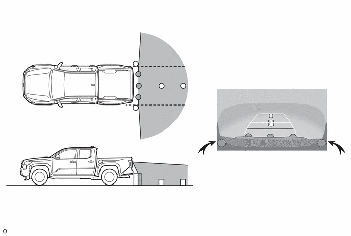
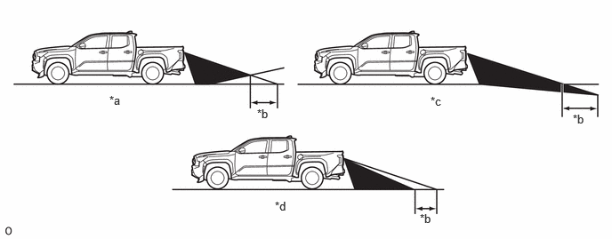
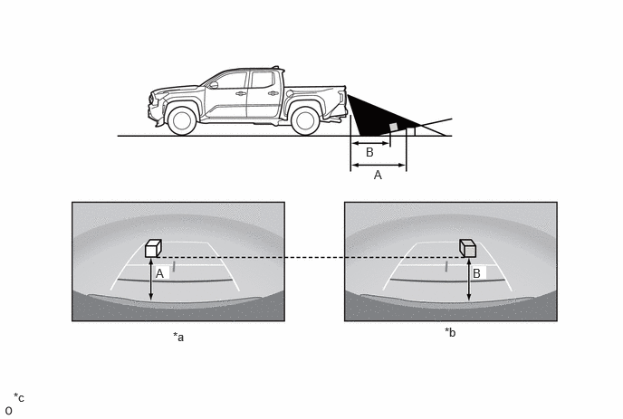
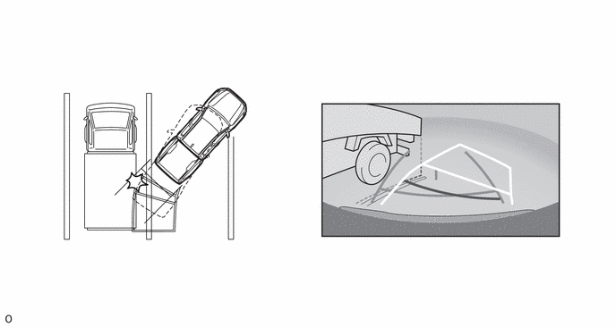
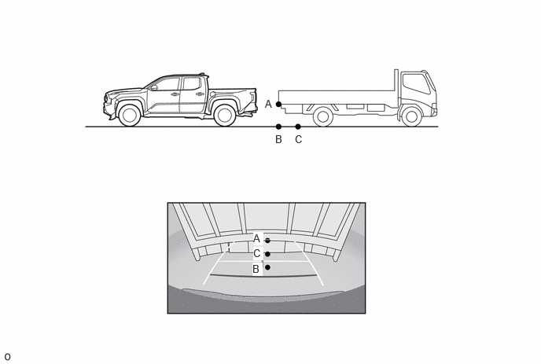
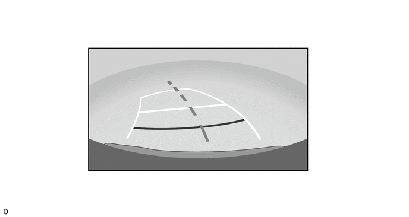
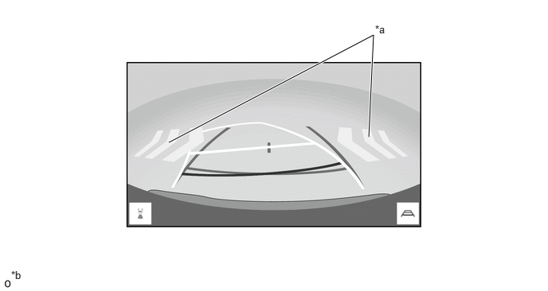

- The road surface is slippery (frozen or covered with snow).
- Snow chains or spare tires are used.
- The tailgate is not fully closed.
- The vehicle is driven on a road that is not even, such as a slope.
- The vehicle is driven on a road that is not straight, such as curved roads.
- Tires outside of the specified size are equipped.
- The suspension has been modified.
| Last Modified: 10-07-2025 | 6.11:8.1.0 | Doc ID: NM100000002GLDE |
| Model Year Start: 2024 | Model: Tacoma | Prod Date Range: [12/2023 - ] |
| Title: PARK ASSIST / MONITORING: PARKING ASSIST MONITOR SYSTEM: GENERAL; 2024 - 2026 MY Tacoma Tacoma HV [12/2023 - ] | ||
GENERAL
OUTLINE
(a) The parking assist monitor system assists the driver by displaying an image of the view behind the vehicle while backing up, for example while parking. When the display is changed to the wide rear view mode, a wider lateral view behind the vehicle will be displayed.
(b) The parking assist monitor system has a rear television camera assembly mounted on the tailgate to display a view of the area behind the vehicle on the radio and display receiver assembly.
(c) This system consists of the rear television camera assembly and radio and display receiver assembly.
(d) The rear television camera assembly controls the parking assist monitor system.
NOTICE:
- The parking assist monitor system is a system that helps the user to confirm the conditions of the rear of the vehicle. Always drive while directly confirming the surroundings of the vehicle (particularly the area to the rear).
- Pedestrians and obstacles that are displayed on the screen may differ from the actual location and distance due to the characteristics of the lens in the rear television camera assembly.
PRECAUTION
(a) When driving, directly confirm the surroundings of the vehicle (particularly the area to the rear). Failure to do so can lead to unforeseen accidents, such as collisions with other vehicles, etc. Make sure to observe the following precautions when using the parking assist monitor system.
(1) Do not rely entirely on the parking assist monitor system. When backing up, drive the vehicle as carefully as you would drive one that is not equipped with the parking assist monitor system.
(2) Always drive while directly confirming the surroundings of the vehicle (particularly the area to the rear).
(3) Back up slowly by depressing the brake pedal to adjust the speed.
(4) Never attempt to back up the vehicle only by observing the screen. If you do so, you could unexpectedly crash the vehicle or cause an accident because the image on the screen could differ from the actual situation. While backing up, also make sure to use the inside and outside rear view mirrors in order to directly verify the safety of the rear and surrounding areas.
(5) The position of the guide lines displayed on the screen may differ depending on the number of passengers, load capacity and incline of the road. Always drive while directly confirming the surroundings of the vehicle (particularly the area to the rear).
(6) The operation procedure for each mode of the parking assist monitor system is just an example, and the timing and amount of operation of the steering wheel will vary depending on the road conditions, road surface and vehicle conditions during parking. Please use the parking assist monitor system after fully understanding the above. Also, when parking, make sure you can park your car in the parking space before operating.
(7) Do not use the parking assist monitor under the following situations.
|
|
(8) When the outside air temperature is low, the screen may become darker or appear faint. Since moving objects in particular may become distorted or disappear, always drive carefully while directly confirming the safety of your surroundings.
(9) When tires are replaced, the position indicated by the guide lines displayed on the screen may differ slightly.
(10) If you contact a vehicle, obstacle or pedestrian nearby or run onto the sides of the road, depress the brake pedal and stop the vehicle.
(11) Pedestrians and obstacles that are displayed on the screen may differ from the actual location and distance due to the characteristics of the lens in the rear television camera assembly.
(12) The position of the guide lines displayed on the screen may differ depending on the number of passengers, load capacity, etc. Always drive while directly confirming the surroundings of the vehicle (particularly the area to the rear).
(13) The vehicle width guide lines are displayed wider than the actual vehicle width. While driving in reverse, always confirm the surroundings of the vehicle (particularly the area to the rear).
(b) Area Displayed on Screen
(1) The display area may differ depending on the vehicle and road conditions.
(2) The area covered by the rear television camera assembly is limited. The rear television camera assembly does not show objects close to either corner of the bumper or show items under the bumper. The clearance distance that appears on the screen is different from the actual distance because the rear television camera assembly uses a wide-angle lens.
(3) An object that is positioned higher than the rear television camera assembly may not be displayed on the screen.
Rear Television Camera Assembly Visible Area (Rear View)

Rear Television Camera Assembly Visible Area (Wide Rear View)
HINT:
The illustration shown is an example only. The illustration may differ from the actual vehicle screen.
(c) Rear Television Camera Assembly Precautions
(1) The camera is unable to capture a clear image if the glass in front of the lens is dirty. Therefore, clean the glass if it has water drops, snow or dirt on it.
(2) Make sure to follow the precautions below to ensure the parking assist monitor system operates normally.
|
(3) If the camera is hit, a malfunction may occur. Have the vehicle inspected by your dealer as soon as possible.
(d) Road Condition Precautions
(1) Depending on the number of occupants, the load conditions, the slope of the road, and bumps in the road, a disparity may occur between the display indication and the actual distance on the road surface. Operate the vehicle carefully.
|
*a |
Steep Uphill Incline behind Vehicle |
*b |
Disparity |
|
*c |
Steep Downhill Incline behind Vehicle |
*d |
Vehicle Posture Changed by Passengers and Load |
(2) If a steep uphill incline is behind the vehicle, an obstacle will appear to be further away than it actually is, as shown in the illustration below.
|
*a |
Screen Image in Case A |
*b |
Screen Image in Case B |
|
*c |
The illustration shown is an example only. The illustration may differ from the actual vehicle screen. |
- |
- |
(e) Precautions for 3-dimensional Obstacles
(1) Drive carefully when any 3-dimensional objects, such as walls or vehicles, are behind the vehicle as the distance and estimated course lines are provided based on the road surface.
- When passing close to a 3-dimensional object, the
vehicle may come into contact with the object even if
the estimated vehicle path seems not to be in contact
with it on the screen. 
HINT:
The illustration shown is an example only. The illustration may differ from the actual vehicle screen.
- The distance indication as shown on the screen
varies between 3-dimensional objects such as a
vehicle and a flat plane such as the road surface. As
shown in the following illustrations, points A and B
are actually vertically aligned and point C is
farther away from them, however, the points are
displayed in order of distance from the vehicle, B, C
and A. Therefore, the vehicle will come into contact
with the 3-dimensional object if it is backed to
point B on the screen. 
HINT:
The illustration shown is an example only. The illustration may differ from the actual vehicle screen.
- On slippery roads, such as snowy roads, the estimated vehicle path and actual vehicle path may not match.
- When only one parking line is provided, the vehicle may seem to be parallel to the line on the screen even if it is not actually parallel.
(f) Estimated Course Lines and Vehicle Center Line
(1) As the guide lines are shown midair near the rear bumper, there are times that they may look like they are off-center.
(g) RCTA Icon Display (Models with RCTA Function)
(1) The icon of the RCTA is displayed superimposed on a view captured by the camera. The icon may be difficult to see depending on the brightness and color of the surroundings.
|
*a |
RCTA Icon |
*b |
The illustration shown is an example only. The illustration may differ from the actual vehicle screen. |